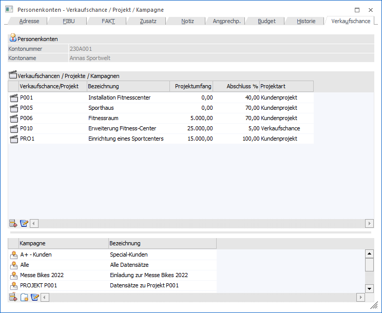
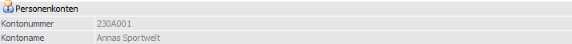
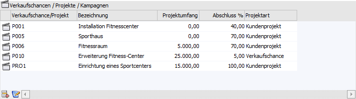
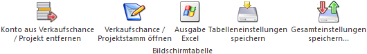
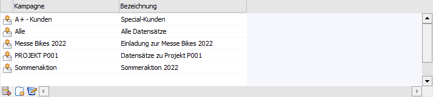
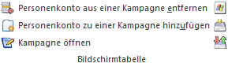

Im Register "Verkaufschance" des Personenkontenstamms werden die Verkaufschancen bzw. Projekte (Kunden-, sowie Serviceprojekte) und Kampagnen des Kontos angezeigt und können direkt editiert werden.

Folgende Eingabefelder, Einstellungen und Informationen stehen zur Verfügung:
Personenkonten

Ø Kontonummer
An dieser Stelle wird die Kontonummer des ausgewählten Personenkontos angezeigt.
Ø Kontoname
Hier wird der Kontoname des aktuell gewählten Kontos dargestellt.
Tabelle "Verkaufschancen / Projekte"

In der Tabelle werden alle Verkaufschance bzw. Projekte angezeigt, in denen das Personenkonto eingetragen wurde.
Tabellenbuttons "Verkaufschancen / Projekte"

Ø Konto aus Verkaufschance / Projekt entfernen
Mit Hilfe dieses Buttons wird das Personenkonto aus der Verkaufschance bzw. dem Projekt entfernt.
Ø Verkaufschance / Projektstamm öffnen
Durch Anwahl dieses Buttons wird die Verkaufschance bzw. das Projekt im jeweiligen Stammdatenprogramm zur Bearbeitung geöffnet.
Ø Ausgabe Excel
Durch Anwahl des Buttons "Ausgabe Excel" wird der Inhalt der Tabelle an Microsoft Excel übergeben.
Ø Tabelleneinstellungen speichern
Die Spalten einer Tabelle können grundsätzlich an beliebige Positionen verschoben, bzw. in der Breite entsprechend angepasst werden. Durch Anwahl des Buttons "Tabelleneinstellungen speichern" werden die Einstellungen benutzerspezifisch gespeichert und bei dem nächsten Aufruf des Programmpunktes wieder vorgeschlagen.
Ø Gesamteinstellungen speichern
Im Gegensatz zu "Tabelleneinstellungen speichern" können mit "Gesamteinstellungen speichern" mehrere Tabellenaufbauten gespeichert und nach Wunsch geladen werden. Zusätzlich werden Sonderfunktionen der Tabelle (z.B. "Spalte gruppieren") ebenfalls bei der Speicherung bedacht.
Tabelle "Kampagnen"

In der Tabelle "Kampagnen" werden jene Kampagnen angezeigt, in denen das Personenkonto enthalten ist. Durch Anwählen einer neuen (der nächsten freien) Zeile oder durch Drücken des Tabellenbuttons "Personenkonto zu einer Kampagne hinzufügen" wird eine neue Zeile in die Tabelle eingefügt. Dort kann eine gewünschte Kampagne eingegeben werden, bzw. mittels Matchcode danach gesucht und übernommen werden.
Ist das Personenkonto bereits in der neu hinzugefügten Kampagne vorhanden, so erfolgt eine entsprechende Meldung dazu.
Tabellenbuttons "Kampagnen"

Ø Personenkonto aus einer Kampagne entfernen
Mit dem Entfernen-Button kann das Konto aus der Kampagne gelöscht werden.
Ø Personenkonto zu einer Kampagne hinzufügen
Mittels dieses Buttons können neue Zeilen/Kampagnen zum Personenkonto hinzugefügt werden.
Ø Kampagne öffnen
Durch Drücken dieses Buttons (alternativ dazu kann die Kampagne auch in der Tabelle mittels Doppelklick angewählt werden) kann die ausgewählte Kampagne geöffnet werden.
Ø Ausgabe Excel
Durch Anwahl des Buttons "Ausgabe Excel" wird der Inhalt der Tabelle an Microsoft Excel übergeben.
Ø Tabelleneinstellungen speichern
Die Spalten einer Tabelle können grundsätzlich an beliebige Positionen verschoben, bzw. in der Breite entsprechend angepasst werden. Durch Anwahl des Buttons "Tabelleneinstellungen speichern" werden die Einstellungen benutzerspezifisch gespeichert und bei dem nächsten Aufruf des Programmpunktes wieder vorgeschlagen.
Ø Gesamteinstellungen speichern
Im Gegensatz zu "Tabelleneinstellungen speichern" können mit "Gesamteinstellungen speichern" mehrere Tabellenaufbauten gespeichert und nach Wunsch geladen werden. Zusätzlich werden Sonderfunktionen der Tabelle (z.B. "Spalte gruppieren") ebenfalls bei der Speicherung bedacht.